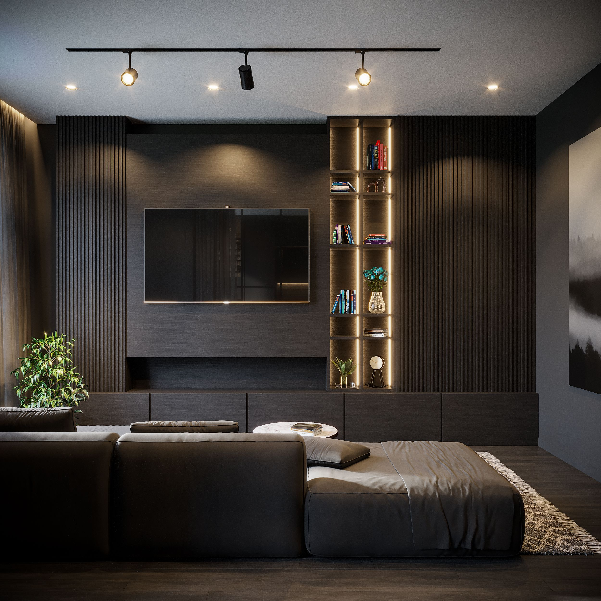
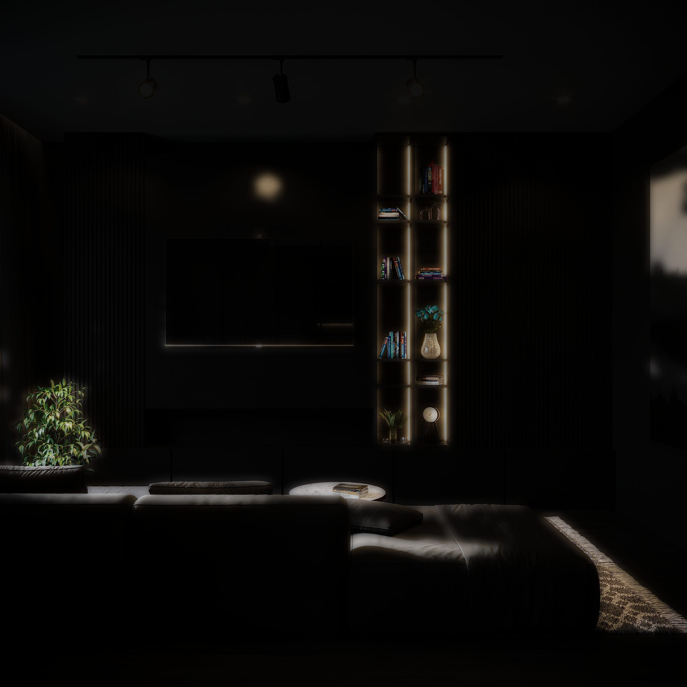

Heloisa · Depoimentos
Corretora de Imóveis de Alto Padrão
Jurerê Internacional · Florianópolis
“Espaço para o depoimento de um cliente. Substitua este texto de exemplo pelo relato real.”
“Segundo depoimento de exemplo. Frases curtas, com emoção e resultado, funcionam melhor.”
“Terceiro depoimento de exemplo. Você também pode linkar para suas avaliações no Google.”
Heloisa · Imóveis de Alto Padrão